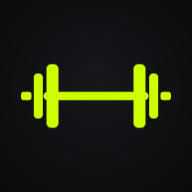

BARLOGPolitique de confidentialité
En vigueur le 20 octobre 2026 · s’applique à l’app Barlog sur iPhone, sur Android et à sa version web.
- Sans compte, Barlog fonctionne entièrement sur ton téléphone : aucune de tes données n’est envoyée au développeur.
- Le compte Barlog est optionnel. Il sert au partage (fil, abonnements, bravos, commentaires) et à la sauvegarde en ligne privée de tes données. Seul ce que tu choisis de publier est partagé.
- Aucune publicité, aucun traceur, aucune statistique d’utilisation, aucune vente de données.
- Données de santé utilisées uniquement avec ton accord, jamais publiées et jamais partagées.
- Tu peux supprimer ton compte et toutes ses données à tout moment, depuis l’app.
1. Responsable et contact
Barlog est développée par un développeur indépendant au Québec. Le responsable de la protection des renseignements personnels est le développeur de Barlog, joignable à barlog.gym.app@gmail.com. Pour toute question, demande d’accès, de correction ou de suppression, ou pour signaler un problème, écris à cette adresse.
2. Sans compte : tes données restent sur ton téléphone
Séances, séries, charges, routines, programmes, exercices personnalisés, notes, poids et mensurations, ainsi que tes réglages, sont enregistrés uniquement sur ton appareil, dans l’espace privé de l’app. Ils ne sont envoyés à aucun serveur.
Ils peuvent être inclus dans la sauvegarde automatique de ton téléphone (iCloud sur iPhone, Google ou Samsung Cloud sur Android), selon tes propres réglages. Ces sauvegardes sont gérées par Apple, Google ou Samsung, pas par Barlog.
3. Avec un compte Barlog (optionnel)
Si tu crées un compte, ces renseignements sont conservés sur nos serveurs :
| Renseignement | Pourquoi | Qui le voit |
|---|---|---|
| Adresse e-mail | Te connecter (code à 6 chiffres) | Toi seul·e (et le développeur pour l’assistance) |
| Pseudo, nom affiché, profil public ou privé, visibilité par défaut | Ton profil | Les utilisateurs connectés (le pseudo et le nom permettent de te trouver) |
| Séances publiées : nom, date, durée, volume, nombre de séries, records, muscles travaillés, petit mot | Le fil d’actualité | Selon la visibilité que tu choisis : Public, Abonnés ou Moi seul |
| Photo de profil (facultative, réduite à 640 × 640 px) | Te reconnaître | Toute personne qui a son adresse (comme le pseudo, elle s’affiche à côté de ton nom) |
| Notifications (demandes d’abonnement, nouveaux abonnés, bravos, commentaires) | Te prévenir de ce qui te concerne | Toi seul·e |
| Abonnements et demandes | Savoir qui voit quoi | Toi et les personnes concernées ; les abonnés d’un profil public sont visibles |
| Bravos et commentaires | Échanger sur les séances | Les personnes qui peuvent voir la séance |
| Comptes bloqués | Ta tranquillité | Toi seul·e (la personne bloquée n’est pas prévenue) |
| Signalements | Modération | Le développeur uniquement |
Sauvegarde en ligne (activée par défaut avec un compte, désactivable dans Profil → Compte). Pour que tu retrouves tout en changeant de téléphone, une copie de tes données Barlog est gardée dans un espace privé, visible par toi seul·e : séances (détail série par série), routines, exercices perso, pesées et mensurations saisies dans Barlog ou importées par CSV, et réglages. Elle est mise à jour automatiquement après chaque changement ; la version de la veille est aussi gardée comme filet de sécurité. Un identifiant aléatoire de l’appareil (sans nom ni modèle) sert à fusionner deux téléphones. Personne d’autre ne peut la lire, elle n’est jamais publiée ni utilisée à d’autres fins. Désactiver la sauvegarde arrête les envois ; supprimer ton compte l’efface.
Ce qui n’est jamais envoyé : les données lues dans Apple Santé ou Health Connect (elles sont relues directement depuis Santé sur ton nouveau téléphone), et, sans compte, rien du tout.
Consentement. Rien n’est publié sans action de ta part : tu publies chaque séance toi-même, ou tu actives la publication automatique. Le profil est privé par défaut et les séances sont visibles par tes abonnés par défaut. Tu peux changer ces réglages, retirer une séance publiée ou désactiver la publication automatique à tout moment.
Âge. Le compte Barlog est réservé aux personnes de 14 ans et plus. L’app reste utilisable sans compte à tout âge.
4. Où sont stockées ces données, et qui nous aide
- Supabase héberge la base de données et la connexion des comptes. Les données sont stockées sur des serveurs situés à Montréal (Canada). Supabase est une entreprise établie aux États-Unis ; ses équipes peuvent y accéder pour faire fonctionner le service.
- Gmail (Google) envoie les e-mails contenant ton code de connexion. Ton adresse e-mail et le code transitent donc par Google, qui peut traiter ces données hors du Québec.
- Ces fournisseurs n’utilisent pas tes données pour leur propre compte ; ils ne servent qu’à faire fonctionner Barlog.
5. Conservation et suppression
Les données de ton compte sont conservées tant que ton compte existe. Profil → Compte → Supprimer mon compte efface immédiatement ton compte, ton profil, ta photo de profil, ta sauvegarde en ligne, tes séances publiées, tes abonnements, tes bravos, tes commentaires, tes notifications et tes blocages. Des copies de sécurité techniques chez l’hébergeur peuvent subsister quelques jours avant d’être effacées automatiquement. Les signalements que tu as envoyés sont conservés sans lien avec ton compte, le temps de les traiter. Tes séances locales ne sont pas touchées : elles restent sur ton téléphone.
6. Données de santé
Si tu l’actives, Barlog se connecte à l’app de santé de ton téléphone. Tu choisis les autorisations et tu peux les retirer à tout moment dans les réglages du téléphone.
- Apple Santé (iPhone). Barlog y enregistre tes séances (type, durée, calories actives estimées, distance pour le cardio) et tes pesées. Barlog y lit ton poids et, avec Barlog Pro, ta masse grasse, ta masse maigre, ton IMC et ton tour de taille.
- Health Connect (Android, dont Samsung Health). Barlog y enregistre tes séances (type, durée, calories actives estimées, distance pour le cardio) et tes pesées. Barlog y lit ton poids et, avec Barlog Pro, ta masse grasse, ta masse maigre et ta taille (utilisée uniquement pour calculer ton IMC).
Les données lues dans Santé ou Health Connect restent sur ton appareil. Elles ne sont jamais publiées, jamais vendues, jamais utilisées à des fins publicitaires et jamais transmises à des tiers.
7. Notifications
Les notifications (fin de repos, rappels d’entraînement, minuteur sur l’écran verrouillé) sont programmées localement sur ton téléphone. Aucune donnée ne transite par un serveur pour les envoyer.
8. Import, export et partage
Les fichiers que tu importes (Strong ou Hevy en CSV, pesées en CSV, sauvegarde Barlog en JSON) sont lus sur ton appareil. Les exports et les cartes de partage sont créés sur ton appareil et ne le quittent que si tu choisis de les partager avec l’outil de partage de ton téléphone.
9. Autres services
- GitHub Pages. La version web de Barlog est hébergée par GitHub, qui peut conserver des journaux techniques (adresse IP, date) comme tout hébergeur. Tout le code de l’app (polices et bibliothèques comprises) est fourni avec l’app : aucun autre site n’est contacté.
- YouTube. Le bouton « Voir une démo » d’un exercice ouvre YouTube uniquement si tu le touches.
- Achats. Si des achats sont proposés dans l’app, ils sont traités par l’App Store ou Google Play. Barlog ne reçoit jamais tes informations de paiement.
10. Tes droits
Tu peux à tout moment : consulter et corriger ton profil dans l’app ; retirer ton consentement (retirer une publication, passer en « Moi seul », désactiver la publication automatique, supprimer ton compte) ; demander l’accès aux renseignements que nous détenons sur toi ou leur rectification en écrivant à barlog.gym.app@gmail.com. Nous répondons dans un délai de 30 jours. Si tu n’es pas satisfait·e de notre réponse, tu peux t’adresser à la Commission d’accès à l’information du Québec.
11. Incident de sécurité
Si un incident de confidentialité présentant un risque de préjudice sérieux touchait tes renseignements, nous t’en informerions, ainsi que la Commission d’accès à l’information, comme le prévoit la loi.
12. Modifications
Si cette politique change, la nouvelle version sera publiée sur cette page avec sa date d’entrée en vigueur. En cas de changement important pour les comptes, nous te préviendrons dans l’app.
Privacy policy
Effective October 20, 2026 · applies to the Barlog app on iPhone, on Android and to its web version.
- Without an account, Barlog runs entirely on your phone: none of your data is sent to the developer.
- The Barlog account is optional. It is used for sharing (feed, follows, kudos, comments) and for the private online backup of your data. Only what you choose to publish is shared.
- No ads, no trackers, no usage analytics, no data sales.
- Health data is used only with your permission, never published and never shared.
- You can delete your account and all its data at any time from the app.
1. Who is responsible and how to reach us
Barlog is made by an independent developer in Québec, Canada. The person in charge of the protection of personal information is Barlog’s developer, reachable at barlog.gym.app@gmail.com. Write to this address for any question, request for access, correction or deletion, or to report a problem.
2. Without an account: your data stays on your phone
Workouts, sets, weights, routines, programs, custom exercises, notes, body weight and measurements, and your settings are stored only on your device, in the app’s private storage. They are not sent to any server.
They may be included in your phone’s automatic backup (iCloud on iPhone, Google or Samsung Cloud on Android), depending on your own settings. These backups are handled by Apple, Google or Samsung, not by Barlog.
3. With a Barlog account (optional)
If you create an account, this information is stored on our servers:
| Information | Why | Who sees it |
|---|---|---|
| Email address | Signing in (6-digit code) | Only you (and the developer for support) |
| Username, display name, public or private profile, default visibility | Your profile | Signed-in users (username and name let people find you) |
| Published workouts: name, date, duration, volume, number of sets, records, muscles worked, short note | The feed | Depending on the visibility you choose: Public, Followers or Only me |
| Profile photo (optional, resized to 640 × 640 px) | Recognize you | Anyone who has its address (like your username, it is shown next to your name) |
| Notifications (follow requests, new followers, kudos, comments) | Tell you what concerns you | Only you |
| Follows and requests | Knowing who sees what | You and the people involved; followers of a public profile are visible |
| Kudos and comments | Talking about workouts | People who can see the workout |
| Blocked accounts | Your peace of mind | Only you (the blocked person is not notified) |
| Reports | Moderation | The developer only |
Online backup (on by default with an account, can be turned off in Profile → Account). So you get everything back when you change phones, a copy of your Barlog data is kept in a private space only you can see: workouts (set-by-set detail), routines, custom exercises, weigh-ins and measurements entered in Barlog or imported by CSV, and settings. It is updated automatically after every change; the previous day’s version is also kept as a safety net. A random device identifier (no name or model) is used to merge two phones. No one else can read it, and it is never published or used for anything else. Turning the backup off stops uploads; deleting your account erases it.
Never sent: data read from Apple Health or Health Connect (your new phone reads it again directly from Health), and, without an account, nothing at all.
Consent. Nothing is published without an action from you: you publish each workout yourself, or turn on automatic publishing. Profiles are private by default and workouts are visible to your followers by default. You can change these settings, remove a published workout or turn off automatic publishing at any time.
Age. The Barlog account is for people 14 and older. The app can be used without an account at any age.
4. Where this data is stored, and who helps us
- Supabase hosts the database and account sign-in. Data is stored on servers located in Montréal (Canada). Supabase is a company based in the United States; its staff may access the data to run the service.
- Gmail (Google) sends the emails containing your sign-in code. Your email address and the code therefore go through Google, which may process them outside Québec.
- These providers do not use your data for their own purposes; they only help run Barlog.
5. Retention and deletion
Account data is kept as long as your account exists. Profile → Account → Delete my account immediately erases your account, profile, profile photo, online backup, published workouts, follows, kudos, comments, notifications and blocks. Technical backups at our host may remain for a few days before being erased automatically. Reports you sent are kept, no longer linked to your account, while they are handled. Your local workouts are not affected: they stay on your phone.
6. Health data
If you turn it on, Barlog connects to your phone’s health app. You choose the permissions and can revoke them at any time in your phone’s settings.
- Apple Health (iPhone). Barlog writes your workouts (type, duration, estimated active calories, distance for cardio) and your weigh-ins. Barlog reads your body weight and, with Barlog Pro, your body fat, lean body mass, BMI and waist circumference.
- Health Connect (Android, including Samsung Health). Barlog writes your workouts (type, duration, estimated active calories, distance for cardio) and your weigh-ins. Barlog reads your body weight and, with Barlog Pro, your body fat, lean body mass and height (used only to calculate your BMI).
Data read from Health or Health Connect stays on your device. It is never published, never sold, never used for advertising and never shared with third parties.
7. Notifications
Notifications (rest finished, workout reminders, lock screen timer) are scheduled locally on your phone. No data goes through a server to deliver them.
8. Import, export and sharing
Files you import (Strong or Hevy CSV, weigh-ins CSV, Barlog JSON backup) are read on your device. Exports and share cards are created on your device and only leave it if you choose to share them with your phone’s share sheet.
9. Other services
- GitHub Pages. Barlog’s web version is hosted by GitHub, which may keep technical logs (IP address, date) like any host. All of the app’s code (fonts and libraries included) ships with the app: no other website is contacted.
- YouTube. An exercise’s “Watch a demo” button opens YouTube only if you tap it.
- Purchases. If in-app purchases are offered, they are processed by the App Store or Google Play. Barlog never receives your payment details.
10. Your rights
At any time you can: view and correct your profile in the app; withdraw your consent (remove a post, switch to “Only me”, turn off automatic publishing, delete your account); request access to the information we hold about you, or its correction, by writing to barlog.gym.app@gmail.com. We reply within 30 days. If you are not satisfied with our answer, you can contact Québec’s Commission d’accès à l’information.
11. Security incidents
If a confidentiality incident presenting a risk of serious harm affected your information, we would notify you and the Commission d’accès à l’information, as required by law.
12. Changes
If this policy changes, the new version will be published on this page with its effective date. For important changes affecting accounts, we will let you know in the app.